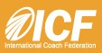
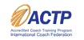
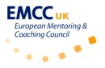

Getting Accredited as a Coach
While the coaching profession is not regulated at present, more and more coaches are choosing to become industry accredited to help better establish their professional credentials and achieve market differentiation, especially with business departments responsible for coaching procurement.
All of CTI’s coach training (Fundamentals, Core Curriculum, Certification) programs are accredited by the two, internationally recognised, independent bodies offering accreditation in Europe today: The International Coaching Federation (ICF) and The European Mentoring and Coaching Council (EMCC). CTI’s Leadership Circle program is also accredited by the EMCC.
Graduates of CTI’s accredited coach training programs are eligible, if they so wish, to apply for the ICF or EMCC’s individual accreditation, by applying direct to the organisation.
The ICF
The ICF, founded in 1995, has more than 17,000 members and more than 7,000 accredited coaches in 70 countries and over 132 chapters in 34 countries. It is the largest not-for-profit professional association for coaches and is committed to building, supporting and preserving the integrity of the coaching profession.
Their credentialling programme focuses on creating excellent hands-on coaches who are skilled in the 'being' and 'doing' of coaching in way that no other association to date has been able to match.
CTI’s Fundamentals, Intermediate (Core Curriculum in the UK) and Certification programs, are all ICF Accredited Coach Training Programs (ACTP). Certified graduates of ACTPs may apply for an ACC or PCC credential using the ACTP graduate application via the ICF website.
The EMCC
The European Mentoring & Coaching Council (EMCC) exists to promote good practice, and the expectation of good practice, in mentoring and coaching across Europe.
The EMCC’s European Quality Award (EQA), is an independent quality award given to providers of coaching and mentoring training which recognises that their qualifications/training meet stringent, professional European standards. The emphasis of this award is to raise standards whilst acknowledging existing excellence. It is an integral and essential step on the path to establishing the professional credibility and status of coaching and mentoring.
CTI’s Fundamentals course provides the required EQA Training, to be eligible for the EMCC’s European Individual Accreditation (EIA) at Foundation level, by applying direct to the organisation.
CTI’s Intermediate (Core Curriculum), Certification and Leadership Circle Profile Certification courses together provide the required EQA Training, to be eligible for the EMCC’s European Individual Accreditation (EIA) at Practitioner level. To find out more about The Leadership Circle Profile Certification click here.
EMCC Accreditation FAQs
- What is the European Mentoring and Coaching Council (EMCC)?
-
The EMCC exists to promote good practices and the expectation of good practices in coaching and mentoring across Europe. It is a Europe-wide council that consists of representatives from national EMCCs, plus direct members in countries where a local EMCC does not yet exist. The EMCC membership is a rich mixture of individual coaches/mentors, coaching organizations, training and education providers, buyers of coaching/mentoring and coach/mentor associations – all of whom share EMCC’s vision of promoting good practices in coaching/mentoring. http://www.emccouncil.org/
- What’s the difference between the ICF and EMCC?
-
The difference is purely geographical from our point of view. Both organisations share similarly high ethical values and standards for the coaching profession, and in fact the two organisations have for a number of years agreed to work together on areas in which they share common ground such as: standards for coach-specific training programs; and a potential model code of conduct for professional coaches.
- I’m already ICF accredited why should I bother applying for the EMCC?
-
While it is ultimately who you are and how you practice as a coach which most influences your reputation, people seeking life coaching and organizations seeking to hire executive coaches are increasingly identifying specific credentials of the coach they wish to hire.
We’ve noted that the EMCC has established a good reputation in Europe for holding a high bar for professional coaches, and in particular for those who work in business coaching.
By becoming EMCC accredited as a training provider we have made it easier for you to secure the EMCC’s European Individual Award (EIA) as a practicing coach, if that’s the path you choose to take.
- What’s the difference between the EMCC’s EQA and EIA awards.
-
The European Quality Award (EQA) is only for business course/program providers. The European Individual Award (EIA) is for individual coaches. The same distinction exists with the ICF. CTI is an Accredited Coach Training Programs (ACTP) provider, and graduates of our courses (intermediate and certification) may apply for ACC or PCC status as an individual coach.
- Which awards has CTI been awarded by the EMCC?
-
CTI has a European Quality Award (EQA) Certification with EMCC for two levels: Foundation and Practitioner levels.
- Our Fundamentals course has a Foundation level EQA. Graduates of our Fundamentals course can apply for the European Individual Award (EIA) at the Foundation level.
- Our Certified Co-Active Coach training program, plus The Leadership Circle Profile (together) have an EQA at Practitioner level. If you are CPCC and have also completed The Leadership Circle Profile you can apply for the European Individual Award (EIA) at Practitioner level.
- Why do I have to take the Leadership Circle Profile to win the EMCC’s European Individual Award (EIA) at Practitioner level?
-
With their emphasis on helping coaches establishing their credentials with businesses and organizations, to be awarded the EQA at Practitioner Level, the EMCC required us to show that our coaches had access to an established assessment instrument.
As a result of our partnership with The Leadership Profile, we were able to present this course, to meet this criterion.
- What exactly is the Leadership Circle Profile?
-
As the first and only multi-rater assessment, woven together with a coaching model, the TLC represents a powerful instrument to help you take your clients deeper and achieve superior results. http://www.thecoaches.com/coach-training/assessments-and-tools/
- How does CTI’s EQA make it easier for me to apply for the EMCC’s EIA?
-
Our awards make it easier for you to apply in two key ways.
- With CTI’s EQA Certificates, our students have a fast-track option which is simpler and takes less time. CTI graduates will do 60-65% less work when apply for an EIA than without CTI’s EQA, providing that they meet all other requirements. Qualified applicants will skip Section 4 (case studies) of the EIA application, which can be downloaded from http://emccaccreditation.org/eia-home/eia-downloads-form.
- Also, our graduates could save money on EIA Accreditation Fees:
Foundation level (with CTI EQA certificate): £950+VAT (savings are £150+VAT) Foundation level (no EQA certificate, but submitting evidence of competence): £1,100+VAT
Practitioner level (with CTI EQA certificate): £950+VAT (Savings are £ 300+VAT) Practitioner level (no EQA certificate, but submitting evidence of competence): £1,250+VAT
(Pricing accurate as of September 2011.)
- What are the benefits of having a European Individual Award (EIA)?
-
EIA sets very high standards and is recognized as a quality coach/mentor accreditation in the marketplace. It will raise standards and professionalism in coaching/mentoring by:
- distinguishing one as a professional coach/mentor, working to rigorous and demanding standards
- raising professional credibility
- providing a framework for personal development and demonstrating continually developing capability
- Who is it for?
-
EIA is relevant for anyone involved in coaching/mentoring. Accreditation can be applied for at any appropriate level, from Foundation to Master Practitioner. The advantage of the EMCC’s accreditation process is that it can be obtained early on in one’s career as a coach/mentor and, as one develops, it can be obtained at higher levels, reflecting growing ability and experience.
- What is the process for the European Individual Award (EIA)?
-
The application forms can be downloaded here http://emccaccreditation.org/eia-home/eia-downloads-form.
- Can CTI help me with my application?
-
No. While we can field questions about how our courses, including the Leadership Circle, relate to becoming accredited by the EMCC, we cannot offer counsel or advice (beyond what is provided here) about the actual process of individual accreditation by the EMCC.